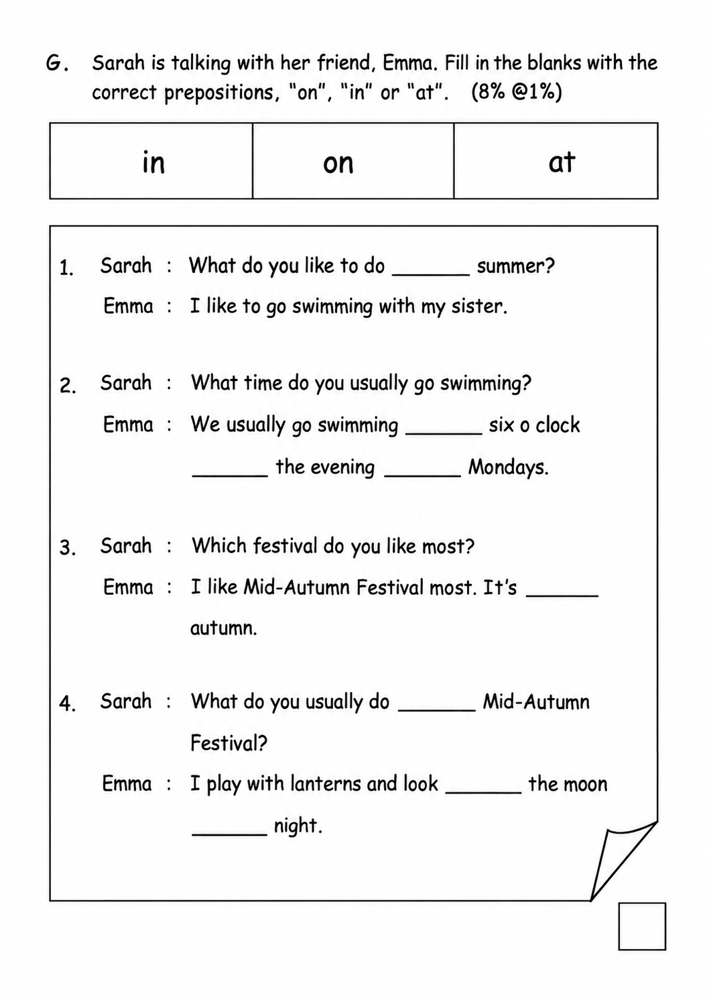
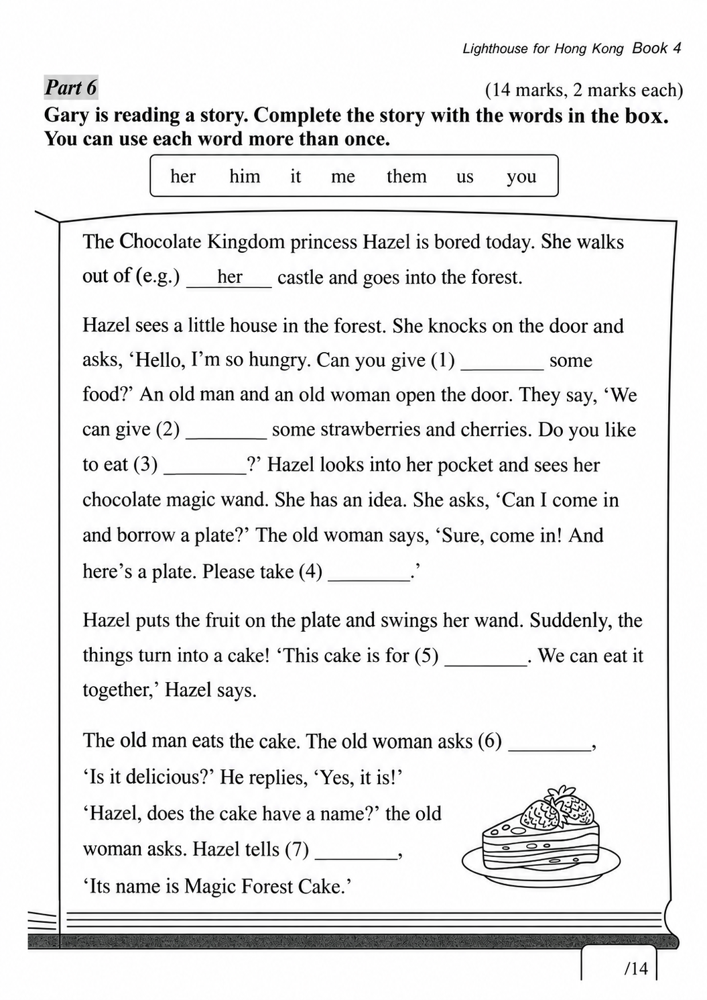

已掌握
| # | 中文意思 | 例句/提示 | 英文默写 | 已掌握 |
|---|---|---|---|---|
| noun 名词 | ||||
| 1 | 皮毛 | The rabbit has soft . | ||
| 2 | 小组 | We work in a . | ||
| 3 | 未来 | I will study hard in the . | ||
| 4 | 活动 | This is fun. | ||
| 5 | 肉类 | I eat for dinner. | ||
| verb 动词 | ||||
| 6 | 定位 | We can the place on the map. | ||
| 7 | 感觉 | I happy today. | ||
| 8 | 选择 | I a book. | ||
| 9 | 绘画 | I a picture. | ||
| phrase 短语 | ||||
| 10 | 邮局 | I sent the parcel from the . | ||
| adjective 形容词 | ||||
| 11 | 硬的；困难的 | This question is . | ||
| 12 | 聪明的 | She is and kind. | ||
| 13 | 相同的 | We are in the class. | ||
| 14 | 干燥的；干的 | My clothes are now. | ||
| adverb 副词 | ||||
| 15 | 有时 | I walk to school. | ||
| verb/noun 动词/名词 | ||||
| 16 | 改变，找零 | I can my answer. | ||
| uncategorized 未分类 | ||||
| 17 | 等待 | Please for me at the gate. | ||
| 18 | 扔掉 | Please the empty packet in the bin. | ||
| 19 | 厨房 | Dad is cooking in the . | ||
| 20 | 日记 | I write in my every evening. | ||
| # | 单词/词组 | 中文意思 | 例句/说明 | 已掌握 |
|---|---|---|---|---|
| adjective 形容词 | ||||
| 1 | fantastic | The show was fantastic. | ||
| 2 | sad | I feel sad because I miss my friends. | ||
| 3 | gentle | Gopal is gentle and polite. | ||
| noun 名词 | ||||
| 4 | boxing | Boxing is a sport. | ||
| 5 | bus | I go to school by bus. | ||
| 6 | stairs | Please walk up the stairs. | ||
| 7 | shell | The shell is hard. | ||
| 8 | goldfish | The goldfish swims in the bowl. | ||
| 9 | mushroom | A mushroom is a kind of food. | ||
| 10 | character | The story has many characters. | ||
| 11 | shelf | Put the book on the shelf. | ||
| 12 | clue | This clue helps me. | ||
| 13 | festival | We go to the festival. | ||
| 14 | sugar | There's some sugar in the cupboard. | ||
| noun phrase 名词短语 | ||||
| 15 | lemon tea | I'd like two cups of lemon tea, please. | ||
| 16 | a potato | First wash a potato and cut it open. | ||
| 17 | an onion | We need an onion for the soup. | ||
| 18 | Visual Arts | Sarah is good at Visual Arts. | ||
| verb 动词 | ||||
| 19 | reply | Please reply to my email. | ||
| 20 | yawn | I yawn when I am tired. | ||
| verb phrase 动词短语 | ||||
| 21 | build a sandcastle | Peter wants to build a sandcastle. | ||
| 22 | go camping | I want to go camping. | ||
| 23 | chatting with friends | He likes chatting with friends. | ||
| 24 | playing computer games | He likes playing computer games. | ||
| 25 | watching cartoons | She likes watching cartoons. | ||
| 26 | watch a film | We watch a film at the cinema. | ||
| 27 | watch dragon boat races | We watch dragon boat races every year. | ||
| 28 | have a birthday party | I want to have a birthday party at home. | ||
| noun/verb 名词/动词 | ||||
| 29 | exercise | Exercise is good for your health. | ||
| uncategorized 未分类 | ||||
| 30 | assessment | We have a maths assessment on Friday. | ||
| # | 中文意思 | 例句/提示 | 英文默写 | 已掌握 |
|---|---|---|---|---|
| time/date 时间日期 | ||||
| 1 | 五月 | is the fifth month. | ||
| 2 | 星期一 | is a weekday. | ||
| 3 | 星期四 | is a weekday. | ||
| time unit 时间单位 | ||||
| 4 | 年 | A has 12 months. | ||
| 5 | 时 | An has 60 minutes. | ||
| numbers 数字 | ||||
| 6 | 6 | is 6. | ||
| 7 | 9 | is 9. | ||
| 8 | 11 | is 11. | ||
| 9 | 18 | is 18. | ||
| 10 | 70 | is 70. | ||
| 11 | 80 | is 80. | ||
| 12 | 百 | One is 100. | ||
| solid shape 立体图形 | ||||
| 13 | 三棱锥 | A has triangular faces. | ||
| 14 | 圆柱 | A has two circular faces. | ||
| geometry 几何 | ||||
| 15 | 邻边 | These are . | ||
| # | 单词/词组 | 中文意思 | 例句/说明 | 已掌握 |
|---|---|---|---|---|
| operations 运算 | ||||
| 1 | altogether | How many are there altogether? | ||
| geometry 几何 | ||||
| 2 | perpendicular | Perpendicular lines meet at a right angle. | ||
| 3 | acute angle | An acute angle is smaller than a right angle. | ||
| 4 | line segment | Draw a line segment. | ||
| 5 | identical | These two triangles are identical in shape and size. | ||
| answer 答案 | ||||
| 6 | result | Check the result after you calculate. | ||
| place value 位值 | ||||
| 7 | units | The digit is in the units place. | ||
| 8 | 5-digit number | 12,345 is a 5-digit number. | ||
| comparison 比较 | ||||
| 9 | more | 8 is more than 5. | ||
| 10 | least | Which number is the least? | ||
| 11 | lighter | A pencil is lighter than a brick. | ||
| 12 | heaviest | The 3 kg bag is the heaviest of the 1 kg, 2 kg and 3 kg bags. | ||
| time/date 时间日期 | ||||
| 13 | midnight | Midnight is twelve o'clock at night. | ||
| operations calculation 运算 | ||||
| 14 | multiplication | Multiplication can use times. | ||
| 15 | subtract A from B | "Subtract A from B" means B - A. | ||
| 16 | mixed operations | Mixed operations use more than one operation. | ||
| 17 | equally | Share the apples equally. | ||
| 18 | dividend | The dividend is divided by the divisor. | ||
| currency money 货币 | ||||
| 19 | dollar | One dollar has 100 cents. | ||
| 20 | cent | One cent is a small amount of money. | ||
| 21 | exchange | We exchange money at the counter. | ||
| 22 | pay for | I pay for the book. | ||
| 23 | coin | The coin is round. | ||
| 24 | change | Count the change after paying. | ||
| measurement 测量 | ||||
| 25 | centimetre | A centimetre is a small unit of length. | ||
| 26 | weight | The weight of this bag is 2 kg. | ||
| directions tool 方向工具 | ||||
| 27 | compass | A compass shows directions. | ||
| 句型结构 | ||||
| 28 | Angle ... is smaller than Angle ... | Angle A is smaller than Angle B. | ||
| 29 | Angle ... is the smallest. | Angle B is the smallest. | ||
| plane shape 平面图形 | ||||
| 30 | trapezium | A trapezium has exactly one pair of parallel sides. | ||



![The map below shows the routes from Alex’s home to the campsite. (a) The route between the campsite and the ____ is the shortest. This route is ____ km long. (b) The shortest route from Alex’s home to the campsite is ____ km long. The shop(s) that he goes past in this route include(s): ____. (c) The instructor needs to go from the campsite to the supermarket and the accessory store to buy something, and then go back to the campsite. He has to travel at least ____ km, and his route is: Campsite → ____ → Campsite.](assets/question_sets/math_grade3_mistakes_2026-09-22_clean/image5.png)